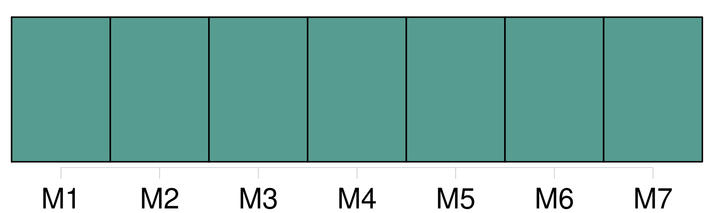
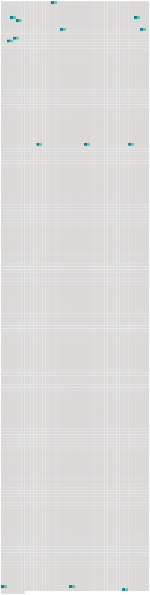

Longueur nb maillons : 14 mentions |
  |
Les lois concernant l'état et la capacité des personnes régissent les Français, même résidant en [pays étranger] [19 phrases]
Tout individu né en France d'un étranger, pourra, dans l'année qui suivra l'époque de sa majorité, réclamer la qualité de Français ; pourvu que, dans le cas où il résiderait en France il déclare que son intention est d'y fixer son domicile, et que, dans le cas où il résiderait en [pays étranger] , il fasse sa soumission de fixer en France son domicile, et qu'il l'y établisse dans l'année, à compter de l'acte de soumission. [1 phrases]
Tout enfant né d'un Français en [pays étranger] est Français.
Tout enfant né, en [pays étranger] , d'un Français qui aurait perdu la qualité de Français, pourra toujours recouvrer cette qualité, en remplissant les formalités prescrites par l'article 9. [7 phrases]
L'étranger, même non résidant en France, pourra être cité devant les tribunaux français, pour l'exécution des obligations par lui contractées en France avec un Français ; il pourra être traduit devant les tribunaux de France, pour les obligations par lui contractées en [pays étranger] envers des Français. [1 phrases]
Un Français pourra être traduit devant un tribunal de France, pour des obligations par lui contractées en [pays étranger] , même avec un étranger. [7 phrases]
La qualité de Français se perdra, 1 ° par la naturalisation acquise en [pays étranger] ; 2 ° par l'acceptation non autorisée par le Gouvernement, de fonctions publiques conférées par un gouvernement étranger ; 3 ° par l'affiliation à toute corporation étrangère qui exigera des distinctions de naissance ; 4 ° enfin, par tout établissement fait en [pays étranger] , sans esprit de retour. [86 phrases]
Tout acte de l'état civil des Français et des étrangers, fait en [pays étranger] , fera foi, s'il a été rédigé dans les formes usitées dans [ledit pays] [1 phrases]
Tout acte de l'état civil des Français en [pays étranger] sera valable s'il a été reçu conformément aux lois françaises, par les agens diplomatiques, ou par les commissaires des relations commerciales de la République. [325 phrases]
Le mariage contracté en [pays étranger] entre Français, et entre Français et étranger, sera valable s'il a été célébré dans les formes usitées dans [le pays] , pourvu qu'il ait été précédé des publications prescrites par l'article 63, au titre des Actes de l'état civil, et que le Français n'ait point contrevenu aux dispositions contenues au chapitre précédent. [1 phrases]
Dans les trois mois après le retour du Français sur le territoire de la République, l'acte de célébration du mariage contracté en [pays étranger] , sera transcrit sur le registre public des mariages du lieu de son domicile. |
 |
La ressource peut être téléchargée sur la page Ortolang
Si vous avez des questions ou vous voyez des erreurs, merci d'envoyer un mail à silvia.federzoni89@gmail.com
Site développé par S. Federzoni (contact)